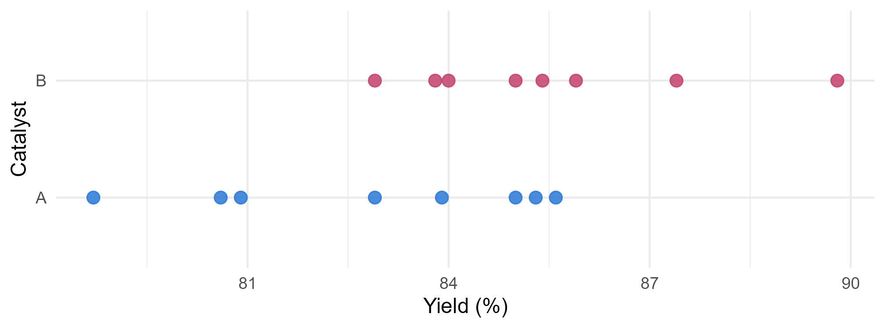
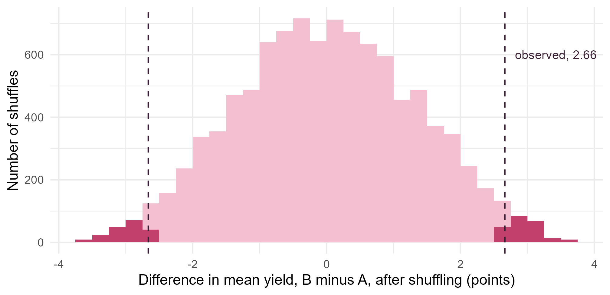
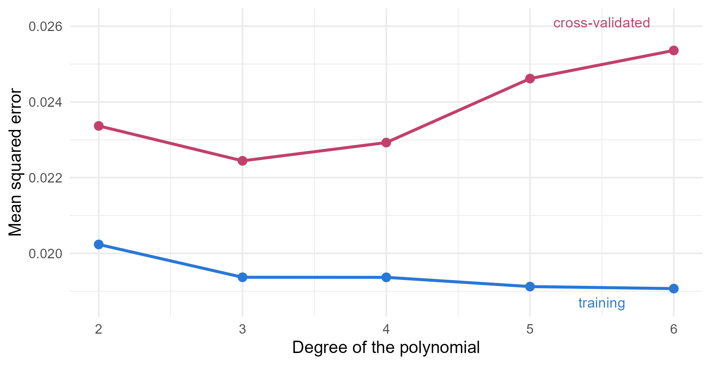

Module 4 · Lesson 7 of 14 Week 67 of 160 About 5–7 hours
Permutation tests, the jackknife and cross-validation
Shuffle the labels, leave one out, hold some back
Three resampling methods with three jobs. Test whether a new catalyst raises the yield with a permutation test, by simulation and exactly, with any statistic you like. Estimate the bias and standard error of the lab’s precision with the jackknife. Choose the degree of a viscosity curve by writing k-fold cross-validation yourself, and check it with the leave-one-out shortcut.
The bootstrap resamples the data to ask “how uncertain is my estimate?”. This lesson’s three methods also reuse the data, each in its own way, for three other jobs:
- Permutation tests shuffle the group labels, to test whether two groups really differ.
- The jackknife leaves out one observation at a time, to estimate a statistic’s bias and standard error.
- Cross-validation holds back part of the data, to estimate how well a model will predict new data.
All three are older than the bootstrap, and you can write each of them in a few lines of R.
Shuffle, leave one out, hold some back. It sounds like a card trick, and the cards will tell you some honest truths about your data!
In this lesson you’ll:
- test the difference between two catalysts with a permutation test
- compute an exact permutation p-value by listing every possible relabeling
- use the jackknife to estimate the bias and standard error of a coefficient of variation
- write k-fold cross-validation yourself, to choose the degree of a polynomial
- use the leave-one-out shortcut for linear models
Permutation tests
Dana ran a trial of a new catalyst, B, against the current one, A: 16 runs, 8 with each catalyst, in random order.
ggplot(trial, aes(x = yield_pct, y = catalyst, color = catalyst)) +
geom_point(size = 3, alpha = 0.85) +
scale_color_manual(values = c(A = "#2a78d6", B = "#C2416C"), guide = "none") +
labs(x = "Yield (%)", y = "Catalyst") +
theme_minimal(base_size = 12)
Catalyst B’s mean yield is 2.66 points higher. Is that the catalyst, or the luck of which runs got which catalyst?
The permutation test answers by taking the null hypothesis literally. If the catalyst makes no difference, each run’s yield would have been the same whichever catalyst it got, and the labels “A” and “B” are just the random assignment. So shuffle the labels: every shuffle is a result that the null hypothesis says was just as likely. Do it thousands of times, and see how often a shuffle gives a difference as big as the one observed. That share is the p-value.
The test makes no assumption of normality. It relies on one thing: that the runs were randomly assigned to the catalysts (or, for observational data, that the observations are exchangeable under the null hypothesis).
Your turn. The setup code has a function diff_means(y, g), which returns B’s mean minus A’s, and the observed difference, obs. Shuffle the labels 10,000 times with sample(), and compute the two-sided p-value.
Shuffle the catalyst labels: sample(trial$catalyst).
set.seed(4071)
perm <- replicate(10000, diff_means(trial$yield_pct, sample(trial$catalyst)))
c(observed = obs, p_value = mean(abs(perm) >= abs(obs)))A p-value of 0.042: only 4.2% of the shuffles gave a difference of 2.66 points or more, in either direction. The two-sample t-test gives 0.043, almost the same, because these data are close to normal. The permutation test got there without assuming it. sample(x) without other arguments returns x in a random order, so each shuffle keeps eight A’s and eight B’s.
Here are the 10,000 shuffled differences. The p-value is the share beyond the dashed lines, at ±2.66:
set.seed(4071)
perm <- replicate(10000, diff_means(trial$yield_pct, sample(trial$catalyst)))
ggplot(data.frame(d = perm), aes(x = d, fill = abs(d) >= abs(obs))) +
geom_histogram(binwidth = 0.25, boundary = 0) +
geom_vline(xintercept = c(-obs, obs), linetype = "dashed", color = "#3A1F35") +
annotate("text", x = obs + 0.15, y = 600, label = "observed, 2.66", hjust = 0, size = 3.6, color = "#3A1F35") +
scale_fill_manual(values = c(`FALSE` = "#F4C0D1", `TRUE` = "#C2416C"), guide = "none") +
labs(x = "Difference in mean yield, B minus A, after shuffling (points)", y = "Number of shuffles") +
theme_minimal(base_size = 12)
A permutation test can use any statistic you like. The difference in medians, for example, is less sensitive to an outlying run.
Your turn. Repeat the test with the difference in medians.
Compare with the observed difference in medians, obs_med.
diff_medians <- function(y, g) median(y[g == "B"]) - median(y[g == "A"])
obs_med <- diff_medians(trial$yield_pct, trial$catalyst)
set.seed(4073)
perm_med <- replicate(10000, diff_medians(trial$yield_pct, sample(trial$catalyst)))
c(observed = obs_med, p_value = mean(abs(perm_med) >= abs(obs_med)))The medians differ by 1.8 points, and the p-value is 0.14. With normal-looking data like these, the median throws away information, so its test has less power. The choice of statistic is part of the test, and it should be made before looking at the results. Trying several statistics and reporting the smallest p-value is cheating, even by accident.
The jackknife
The lab’s precision is reported as a coefficient of variation, the SD as a percentage of the mean. Over 15 analyses of the certified reference material, it’s 2.29%. A customer’s audit asks: how precisely do you know that?
The jackknife, from the 1950s, answers by leaving out one observation at a time. With \hat\theta_{(i)} the statistic computed without observation i, and \bar\theta_{(\cdot)} the average of the n of them, the jackknife estimates the standard error and the bias as
\text{SE}_{\text{jack}} = \sqrt{\frac{n-1}{n} \sum_{i=1}^n \left(\hat\theta_{(i)} - \bar\theta_{(\cdot)}\right)^2}, \qquad \text{bias}_{\text{jack}} = (n - 1)\left(\bar\theta_{(\cdot)} - \hat\theta\right).
The leave-one-out values hardly vary, because each one shares n - 2 observations with any other, so the factor n - 1 scales them up to the size of a real sample-to-sample variation.
Your turn. The setup code has a function cv_pct(). Compute the 15 leave-one-out values, and the jackknife standard error and bias.
x[-i] is x without its ith element.
x <- qc$iron_mgkg
n <- length(x)
theta_i <- sapply(1:n, function(i) cv_pct(x[-i]))
c(cv = cv_pct(x),
jack_se = sqrt((n - 1) / n * sum((theta_i - mean(theta_i))^2)),
jack_bias = (n - 1) * (mean(theta_i) - cv_pct(x)))A CV of 2.29%, with a jackknife standard error of 0.36 percentage points: from 15 analyses, the lab’s precision is somewhere between about 1.6% and 3.0%. The estimated bias is small, −0.03. A bootstrap of the same statistic gives a standard error of 0.33, close to the jackknife’s. The jackknife values also show which analysis matters most: leaving out run 4, the highest result (53.27 mg/kg), drops the CV to 2.05%.
The jackknife needs only n recomputations, where the bootstrap needs thousands, and it gives the same answer every time. Its limitation: it works for smooth statistics such as means, SDs and correlations, but not for the median or other quantiles, which jump in steps when one observation is removed. For those, use the bootstrap.
Cross-validation
The lab measured a resin’s viscosity at 40 temperatures between 20 and 80 °C, and wants a curve to look up the viscosity at any temperature. A polynomial in temperature seems sensible. But what degree? Every extra term makes the curve fit the 40 points better: the training error, the mean squared residual, can only go down. A curve that follows the noise, though, will predict new measurements worse.
Cross-validation estimates the error on new data with the data you have. In k-fold cross-validation, you divide the data at random into k groups, called folds. Each fold takes a turn as the test set: fit the model to the other k - 1 folds, and measure its squared prediction error on the fold that was left out. The average over all folds is the cross-validated error. Lesson 2.12 used it to compare regression models. Now you’ll write it yourself.
Your turn. Complete the function that computes the 5-fold cross-validated error of a polynomial of a given degree, and compute it for degrees 1 to 6.
The test set is fold k.
set.seed(4072)
folds <- sample(rep(1:5, length.out = nrow(visc))) # a random fold for each measurement
cv_mse <- function(degree) {
errors <- sapply(1:5, function(k) {
train <- visc[folds != k, ]
test <- visc[folds == k, ]
fit <- lm(viscosity_mPas ~ poly(temp_C, degree), data = train)
mean((test$viscosity_mPas - predict(fit, test))^2)
})
mean(errors)
}
round(sapply(1:6, cv_mse), 4)A straight line is poor (0.206), degree 2 is far better (0.0234), and degree 3 is best (0.0224). Beyond that, the error rises again: 0.0229, 0.0246, 0.0254. Choose the cubic. Its cross-validated error, 0.0224, corresponds to a typical prediction error of \sqrt{0.0224} = 0.15 mPa·s, which is about the measurement noise.
Here’s the training error against the cross-validated error, for degrees 2 to 6 (the straight line’s errors, near 0.2, would be far off the top):
set.seed(4072)
folds <- sample(rep(1:5, length.out = nrow(visc)))
cv_mse <- function(degree) mean(sapply(1:5, function(k) {
fit <- lm(viscosity_mPas ~ poly(temp_C, degree), data = visc[folds != k, ])
mean((visc$viscosity_mPas[folds == k] - predict(fit, visc[folds == k, ]))^2)
}))
train_mse <- function(degree) mean(resid(lm(viscosity_mPas ~ poly(temp_C, degree), data = visc))^2)
errs <- rbind(data.frame(degree = 2:6, error = sapply(2:6, train_mse), kind = "training"),
data.frame(degree = 2:6, error = sapply(2:6, cv_mse), kind = "cross-validated"))
ggplot(errs, aes(x = degree, y = error, color = kind)) +
geom_line(linewidth = 1) +
geom_point(size = 2.5) +
annotate("text", x = 5.5, y = 0.0261, label = "cross-validated", color = "#C2416C", size = 3.6) +
annotate("text", x = 5.5, y = 0.0187, label = "training", color = "#2a78d6", size = 3.6) +
scale_color_manual(values = c(training = "#2a78d6", `cross-validated` = "#C2416C"), guide = "none") +
scale_x_continuous(breaks = 2:6) +
labs(x = "Degree of the polynomial", y = "Mean squared error") +
theme_minimal(base_size = 12)
The training error says “more is always better”. The cross-validated error says “stop at 3”.
The leave-one-out shortcut
With k = n, every fold holds one observation, and cross-validation becomes leave-one-out cross-validation (LOOCV). It needs n fits in general. For linear models fitted by least squares, though, there’s a shortcut: the prediction error for observation i, from a fit without it, is
y_i - \hat{y}_{(i)} = \frac{e_i}{1 - h_{ii}},
where e_i is the ordinary residual and h_{ii} the leverage from Lesson 2.10. So LOOCV needs just one fit. The sum of the squared leave-one-out errors is called PRESS, the prediction error sum of squares.
Your turn. Compute the LOOCV error with the shortcut, for degrees 1 to 6.
The leverages come from the fitted model: hatvalues(fit).
loocv <- function(degree) {
fit <- lm(viscosity_mPas ~ poly(temp_C, degree), data = visc)
mean((resid(fit) / (1 - hatvalues(fit)))^2)
}
round(sapply(1:6, loocv), 4)0.221, 0.0236, 0.0231, 0.0242, 0.0253 and 0.0263: degree 3 again. These are exactly the numbers you’d get by refitting 40 times, at a fortieth of the cost. LOOCV has no random folds, so it gives the same answer every time.
NoteGo deeper: which k?
Small k (such as 5) trains each model on less data, so it slightly overestimates the error of a model fitted to all the data: a small bias. LOOCV trains on almost all the data, so its bias is tiny, but its n fitted models are nearly identical, so their errors are highly correlated, and the average can be quite variable. Five or 10 folds are the usual compromise. The randomness of the folds adds variation too, which Challenge 2 measures. For choosing between models, the differences in cross-validated error matter, and a common rule is to pick the simplest model whose error is within one standard error of the best (the “one-standard-error rule”).
Challenge round
Challenge 1 · An exact p-value. With 16 runs, there are only \binom{16}{8} = 12{,}870 ways to choose which 8 got catalyst B. combn(16, 8) lists them all, one per column. Compute the difference in means for every one of them, and the exact two-sided p-value.
The other 8 runs are y[-b].
y <- trial$yield_pct
groups <- combn(16, 8) # each column: the 8 runs labeled B
d <- apply(groups, 2, function(b) mean(y[b]) - mean(y[-b]))
c(shuffles = ncol(groups), exact_p = mean(abs(d) >= abs(obs) - 1e-9))The exact p-value is 0.0429: 552 of the 12,870 assignments give a difference of 2.66 or more. The 10,000 random shuffles estimated 0.042, within their Monte Carlo error. (The - 1e-9 is Lesson 2’s tolerance: the observed assignment itself must count, even if its difference is computed with a different rounding error.) With 30 runs, there would be 155 million assignments, and random shuffles would be the only practical way.
Challenge 2 · Does the choice depend on the folds? Repeat the 5-fold cross-validation with 20 different random fold assignments (seeds 1 to 20), and count how often each degree wins.
which.min(cv) gives the position of the smallest error, which is the degree.
best <- sapply(1:20, function(s) {
set.seed(s)
folds <- sample(rep(1:5, length.out = 40))
cv <- sapply(1:6, function(degree) mean(sapply(1:5, function(k) {
fit <- lm(viscosity_mPas ~ poly(temp_C, degree), data = visc[folds != k, ])
mean((visc$viscosity_mPas[folds == k] - predict(fit, visc[folds == k, ]))^2)
})))
which.min(cv) # the degree with the smallest error
})
table(best)Degree 3 wins 14 times and degree 2 wins 6 times. Degree 1 and degrees 4 to 6 never win. So cross-validation is sure about “2 or 3, not more”, and not sure between those two. That’s honest: the curve’s true shape (Andrade’s equation, \ln \mu = A + B/T) isn’t a polynomial at all, and degrees 2 and 3 approximate it about equally well. Averaging the errors over several fold assignments, called repeated cross-validation, makes the choice more stable.
Quick quiz
1. What does a permutation test shuffle?
If the catalyst makes no difference, every assignment of labels to yields was equally likely.
2. What does a permutation test assume?
It needs no distributional assumption, which is why it’s called distribution-free.
3. How many recomputations does the jackknife need for a sample of 15?
One for each observation left out.
4. For which statistic is the jackknife a bad choice?
The median jumps in steps when one observation is removed, so the jackknife’s standard error is unreliable. Use the bootstrap.
5. Why can’t you choose a polynomial’s degree by its training error?
Cross-validation measures the error on data that the model didn’t see.
6. What’s the leave-one-out prediction error of observation i for a linear model?
High-leverage points pull the fit toward themselves, so their residuals understate their prediction errors the most.
Wrap-up
You now have three more resampling tools, each for its own job. Here’s what you’ve learned:
- Permutation tests shuffle the labels to see what the null hypothesis would produce. Catalyst B’s 2.66-point advantage has a p-value of 0.042 from 10,000 shuffles, and 0.0429 exactly, from all 12,870.
- Any statistic can be tested, but choose it before you look: the difference in medians gives p = 0.14.
- The jackknife leaves out one observation at a time. The lab’s CV of 2.29% has a standard error of 0.36 percentage points and a negligible bias. It’s quick and exact, but only for smooth statistics.
- k-fold cross-validation estimates prediction error on new data. It chose a cubic for the viscosity curve, while the training error kept falling.
- LOOCV for linear models needs one fit: the leave-one-out errors are e_i/(1 - h_{ii}).
- Cross-validation has its own randomness: across 20 fold assignments, degree 3 won 14 times and degree 2 won 6.
TipPractice in RStudio (optional, about an hour)
Download catalyst_trial.csv, qc_repeats.csv and viscosity.csv into your project’s data-raw/ folder.
- A permutation test for correlation. Is the iron result correlated with the run number (a drift in the method)? Compute
cor(qc$run, qc$iron_mgkg), then shuffleiron_mgkg10,000 times and compute the share of shuffled correlations at least as big in absolute value. Compare withcor.test(). - The power of a permutation test. Simulate 500 trials of 8 against 8 runs with a true difference of 2.5 points and an SD of 2.2. For each, run a permutation test with 1,000 shuffles. What share of trials gives p < 0.05? Compare it with
power.t.test(n = 8, delta = 2.5, sd = 2.2). - The jackknife and the median. Compute the jackknife standard error of the median of the 15 iron results, and compare it with a bootstrap standard error. Why do they differ?
- Andrade’s equation. Fit
lm(log(viscosity_mPas) ~ I(1 / (temp_C + 273.15)), data = visc)and compute its LOOCV error on the viscosity scale (back-transform its leave-one-out predictions withexp(); you’ll need to refit 40 times, because the shortcut works on the log scale). Is the physical model better than the cubic?
NoteKey words from this lesson
- Permutation test
- A test that compares the observed statistic with its values over random (or all) reassignments of the group labels.
- Exact test
- A permutation test that enumerates every possible reassignment, instead of sampling them.
- Jackknife
- A resampling method that recomputes a statistic with each observation left out, to estimate its bias and standard error.
- Coefficient of variation
- The standard deviation as a percentage of the mean, a common measure of a method’s precision.
- Cross-validation
- Estimating a model’s prediction error on new data by fitting it to part of the data and testing it on the rest.
- Fold
- One of the k groups that k-fold cross-validation divides the data into.
- Leave-one-out cross-validation (LOOCV)
- Cross-validation with one observation per fold. For linear models, its errors are e_i/(1 - h_{ii}).
- PRESS
- The prediction error sum of squares: the sum of the squared leave-one-out errors.
NoteWant to read more?
- Gareth James and others, An Introduction to Statistical Learning, section 5.1, “Cross-validation”, and the R lab in section 5.3. LOOCV, k-fold cross-validation and the bias-variance trade-off, with pictures.
- Tim Hesterberg, “What teachers should know about the bootstrap”, section 3 on permutation tests. Why they’re often the best way to teach and to do hypothesis tests.
- Bradley Efron and Robert Tibshirani, An Introduction to the Bootstrap (Chapman & Hall, 1993), chapters 11 (the jackknife), 15 (permutation tests) and 17 (cross-validation). Not free.